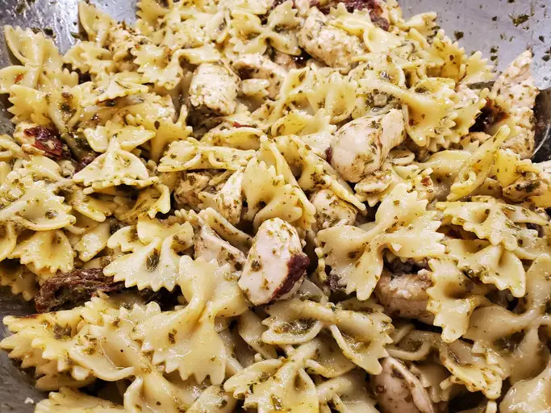

Pesto Pasta

Description
This chicken pesto pasta is easy and delicious. Serve with crusty bread and salad for a quick dinner.
Use as much or as little pesto sauce as you like. Using homemade pesto will taste even better, but it adds to prep time. Enjoy!
Prep Time: 10 mins.
Cook Time: 20 mins.
Total Time: 30 mins.
Servings: 8.
Ingredients
- 1 (16 ounce) package bow tie pasta
- 1 teaspoon olive oil
- 2 cloves garlic, minced
- 2 skinless, boneless chicken breasts, cut into bite-sized pieces
- 1 pinch crushed red pepper flakes, or to taste
- ½ cup pesto sauce
- ⅓ cup oil-packed sun-dried tomatoes, drained and cut into strips
Steps
-